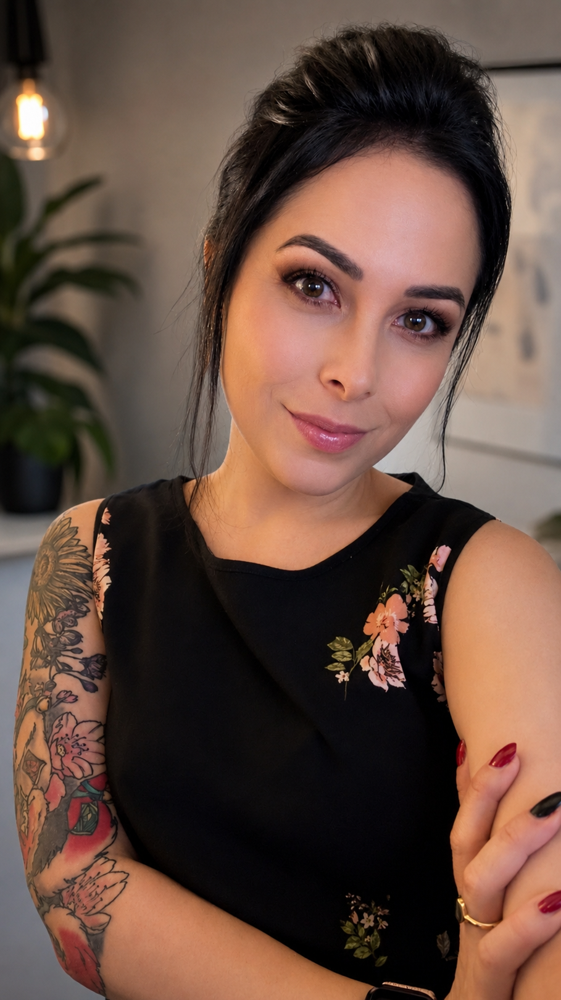

artist, designer, and lifelong maker of things
I’ve been making art for as long as I can remember. Long before I knew what a graphic designer was, I knew one thing for sure: I wanted to be an artist.
A lot of that came from my dad. He was an artist himself, creating incredible drawings and airbrush art, and naturally, I wanted to be just like him. I practiced constantly, always comparing my little drawings to his. I still remember telling him, “Daddy, my artwork doesn’t look like yours.” Instead of letting me give up, he encouraged me to keep going.
Years later, after graduating from Mississippi State University with my BFA in Graphic Design, he reminded me of that little girl who thought she wasn’t good enough. He said, “Do you remember when you were a little girl and you would tell me you weren’t good enough? Now look at you. You’re even better than me.”
Those words have stuck with me ever since. ❤️
Since 2010, I’ve been turning that childhood love of creating into a career — from freelance projects and traditional artwork to professional graphic and web design. I love that my work can live in so many different worlds: a logo, a website, a T-shirt, or something made completely by hand.
Today, I work full-time as an Art Director in Arizona, helping small businesses compete in a big-box world through digital services that make building and maintaining an online presence a little less overwhelming. But outside of my day job, I’m making room for the part of me that’s been drawing, painting, experimenting, and creating since I was a little girl.
And now, I’m ready to share it.
I’m especially excited to create pet and animal portraits, including memorial pieces, for people who want something a little more personal than a traditional portrait. I want you to look at a finished piece and immediately think, “That’s them.” The expression, the personality, the little quirks that made your fur baby uniquely yours.
My hope is to create something that celebrates their life and gives you a special, one-of-a-kind piece to hold onto — something that captures not just what they looked like, but a little bit of who they were. And that philosophy carries into everything I create, whether it’s a memorial piece, a graphic design project, or something made by hand. I want the finished piece to capture the essence of what makes it special. Because there’s no greater joy than seeing someone happy with something I’ve made.
[Currently open for commissions]
say hello
Email Me · Personal Instagram · Crystal Collection - Instagram · Etsy Shop